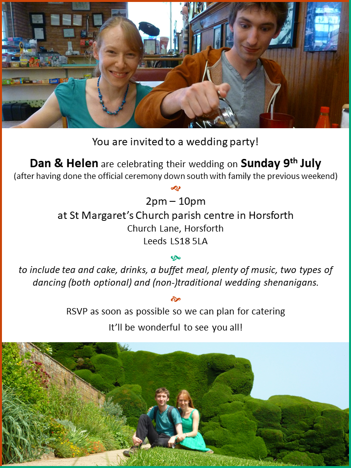

Here is some further information, mostly written by Dan:
Yes, that would be this year, 2 months from now - it’s extremely soon but due to the fickle nature of academia we’re anticipating some locational uncertainty later on so it would be nice to do it while we’re relatively relaxed and in familiar territory. There’s also no pressure to attend - in fact the short notice provides a perfect excuse not to! Though of course we’d far prefer it if you could make it, and apologies if you cannot.
The legal part of the wedding will take place on 1st July (a lower-key thing for closest family and friends), so the party will basically be the wedding reception except we’re less likely to be completely drained or sick of ceremony by the time it starts! As a side-effect there’s no set arrival time or need to transition between venues, plus no one needs to sit at the back and if you wish to object it’ll be too late~
The party will be from
Our first instinct was to find a fancy venue where we could have lots of space and use the inherent atmosphere as a crutch, which would have involved casting £1,500 into an abyss straight away. So we’ve gone small and simple at £20 per hour, allowing us to repurpose abyss-marked resources into stuff to do! So size-wise it might be a squeeze, but we’ve got a 10m2 room and some decent outdoors space looping back round to a corridor with a smaller room adjacent, which will feel nice and full and is plenty, even for dancing (foreshadowing).
The venue is St Margaret’s Church parish hall in Horsforth, a generally nice and quiet place, about a 10 minute walk from our house and with a ginormous spire I’d stopped noticing but now realise you can see from everywhere.
A buffet style vegetarian selection all the way from Sheffield. We found ourselves there arbitrarily, recommended it to friends who it turns out had used them to cater their wedding, so serendipity is doing the driving. There’ll also be some manner of roasted meat for them who wants it, plus constant snacks, dessert and cakes!
Your average church hall rarely provides imbibables more exotic than water or tea, so my mum is providing boxes of bottles of wine as is her way. There’ll be basic cordials/non-alcoholic stuff - If you’d like something different or more specific then bring it along! I think that covers everything...
The bride won’t be in white, the groom won’t fasten his collar, we don’t even intend to dress the chairs up like well-ironed ghosts. There’s no set tables, you’re encouraged to make yourselves hot drinks, collapse on a sofa or wander afield as it suits. In summary: be prepared at the very least (but not exclusively) for barn-dancing.
I’d put in a provision against ‘showing-up’ the bride, but since that’s impossible I won’t bother~
This is mostly an excuse to drag the maximum number of people we’re able to talk to in one day in one place, but it’s also a celebration of us and some of the things we enjoy that can be shared, plus a whole lot of ceremony! I’ve been cautioned against hiring a revolving climbing wall and getting people to compete with me, but there will perhaps be games, instruments, crafting, dancing, some means of recording the occasion. There might be babies present, those are always fun. Other than that, a few things will happen at specific times:
Lindy Hop is a 1920s and 30s jazz/swing dance that allows for loads of variety based on a few simple principles and movements, typically danced in pairs, and follows a really satisfying “
From 3:30 to 4:00 there’ll be a beginners’ class, during which our excellent instructor of 5 years and moreover regular wedding guest Rob will go through the basic steps and a move or two. If we can do it so can anyone...
I like gifts, some of my favourite possessions are gifts! But we’re far from desperate for anything. There’s no need to bring a gift, but if you want to give something, we’d appreciate any donations on our behalf to Pump Aid or Shelter.
Church Lane, Horsforth, Leeds LS18 5LA
By car:
By Bus: the 33, 33A and 757 go from outside Leeds station (go all the way down the “long” concourse past Sainsbury’s, Starbucks, Wetherspoons etc, exit left, and walk along Wellington St (i.e. don’t take a left fork down a slope) where the bus stop is about 50 metres down. The buses go every 10 minutes during the day, and about 20 minutes into the journey there’s a climb into Horsforth then a Tesco Express on the left. Get off at The Fleece Hotel two stops after and you’re half a mile away.
By train: they go every 30 minutes from Leeds to Horsforth on a Sunday. It’s slightly more than half a mile to the church from there.
Curiously both options require you to walk uphill despite coming from opposite directions, as Horsforth is stretched around several sides of a hill. At one point it was the “largest” village in England, and I don’t think that’s a compliment.
If you’ll need to stay overnight, some nearby places include: